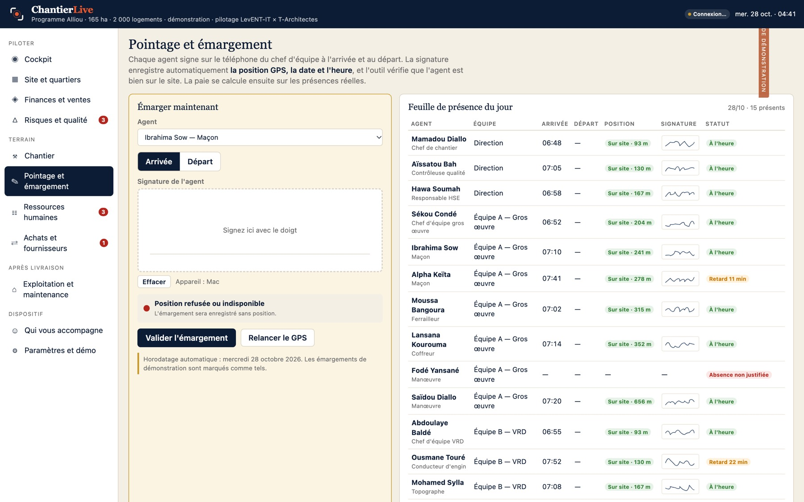
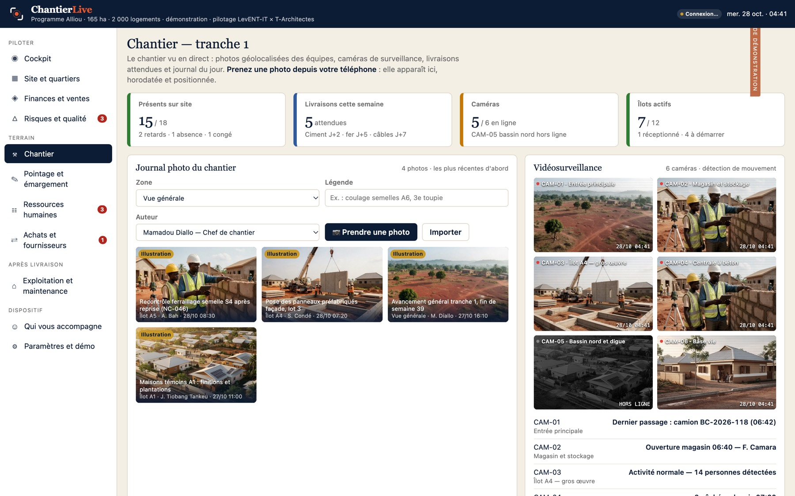
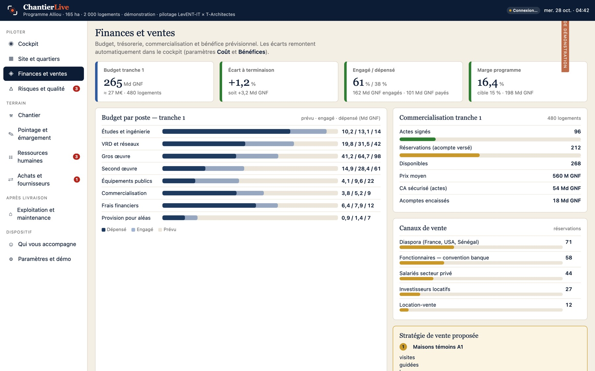

Risques et qualité
Matrice probabilité × impact, plans d'action avec responsable et échéance, non-conformités photographiées avec délai de levée, contrôles par lot.
MatriceNCPlans d'action
Chaque module lit les mêmes données : ce que les équipes ont signé, photographié, livré et dépensé. Rien n'est ressaisi, rien n'est déclaré deux fois.
La page que le promoteur ouvre chaque matin.

Le contrôle des présences, sans papier et sans contestation.

Ce que voient les équipes, le promoteur le voit aussi.

Le plan d'aménagement devient un tableau de bord.

La marge se lit en continu, pas au bilan.

Matrice probabilité × impact, plans d'action avec responsable et échéance, non-conformités photographiées avec délai de levée, contrôles par lot.
Effectifs par équipe, présences réelles issues des émargements, retards, absences, congés à valider, paie mensuelle calculée, chantier-école et montée en compétence.
Demandes d'achat, bons de commande, livraisons attendues, notation des fournisseurs sur le délai et la qualité, stocks critiques avec jours de couverture, règles d'achat.
Réceptions et réserves, remise des clés, syndic et gestion de quartier, tickets de maintenance, charges, satisfaction des acquéreurs.
Application installable sur téléphone, tablette et ordinateur. Les données saisies sans réseau sont synchronisées automatiquement.
Rôles promoteur, direction, chef de chantier, chef d'équipe, architecte, contrôle, lecture seule. Chaque action est journalisée.
Base et fichiers hébergés dans l'Union européenne, chiffrés en transit et au repos, sauvegardes quotidiennes.
Exports CSV et PDF, accès API sur le plan Programme, connexion aux caméras IP et à WhatsApp.